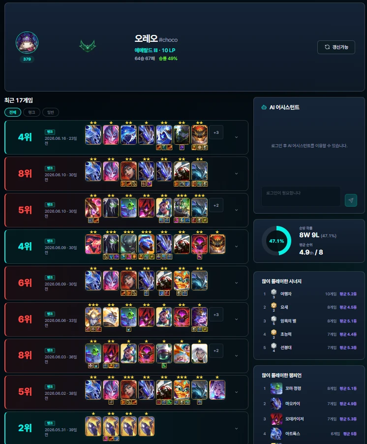
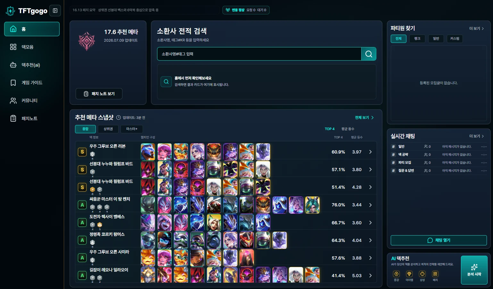
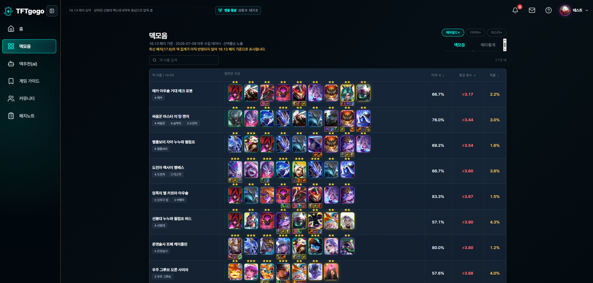
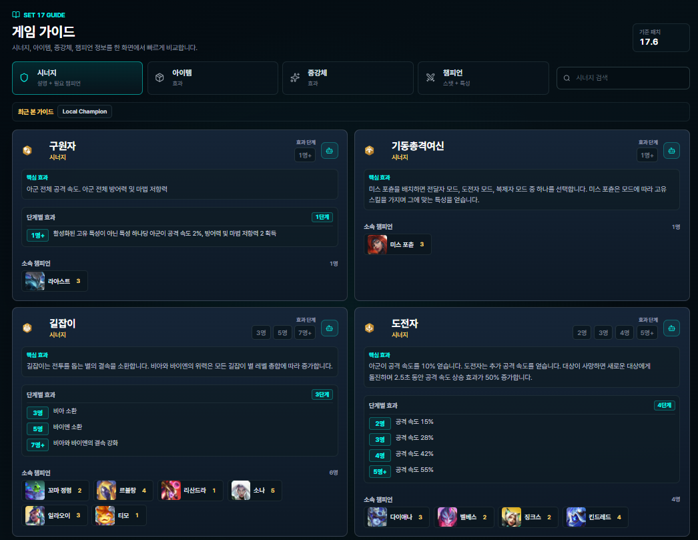
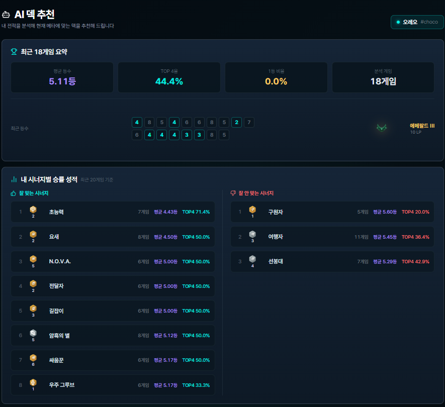
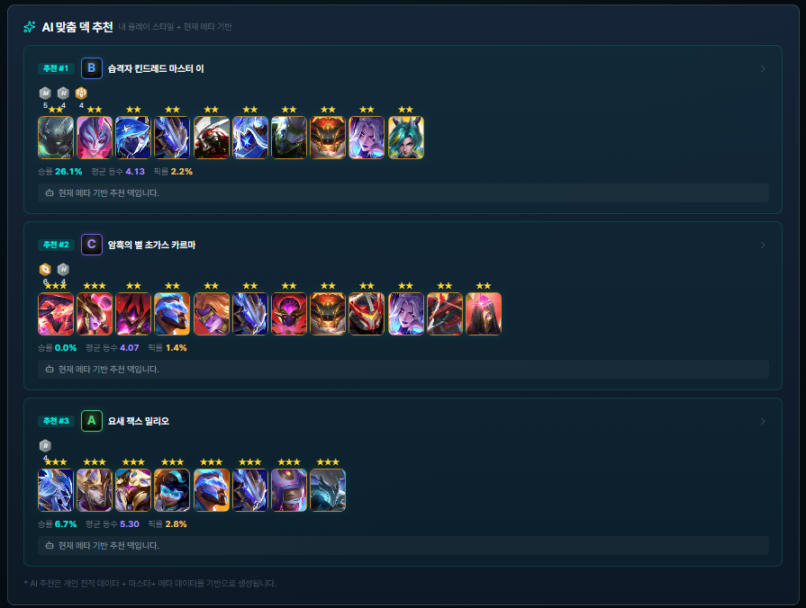

소환사 전적 검색과 매치 분석
Riot API에서 소환사와 매치 데이터를 조회해 최근 경기, 순위, 증강, 챔피언·아이템 구성 정보를 화면에 제공합니다. 외부 API 응답 실패와 데이터 없음 상태를 구분해 사용자 흐름이 끊기지 않도록 설계했습니다.
롤토체스 전적 검색 서비스
전략적 팀 전투(TFT) 유저가 소환사 전적을 검색하고 최근 매치, 증강, 덱 구성, 메타덱과 게임 가이드를 확인할 수 있는 서비스입니다. Spring Boot 백엔드, React 프론트엔드, FastAPI AI 서버를 모노레포로 구성하고 Riot API와 OpenAI API 연동 흐름을 함께 다루고 있습니다.

Repository
Design Assets
React, Spring Boot, FastAPI, MySQL, Redis, PostgreSQL/pgvector, Riot API, OpenAI API 연결 흐름을 정리합니다.
비회원, 로그인 사용자 기준으로 전적 검색, 메타덱 조회, 게임 가이드, AI 추천 흐름을 구분합니다.
소환사, 매치, 메타덱, 게임 가이드, AI 추천, 회원 정보의 관계와 저장 기준을 정리합니다.
Features

Riot API에서 소환사와 매치 데이터를 조회해 최근 경기, 순위, 증강, 챔피언·아이템 구성 정보를 화면에 제공합니다. 외부 API 응답 실패와 데이터 없음 상태를 구분해 사용자 흐름이 끊기지 않도록 설계했습니다.

최근 메타 데이터를 기준으로 덱 구성, 승률, 평균 등수, 픽률을 한 화면에서 비교할 수 있도록 구성했습니다. 반복 조회되는 메타 정보는 DB와 캐시 전략을 함께 고려해 불필요한 외부 호출을 줄이는 방향으로 설계했습니다.

시너지, 아이템, 증강체, 챔피언 정보를 한 화면에서 빠르게 비교할 수 있도록 구성했습니다. Community Dragon 자산을 활용해 게임 데이터와 이미지 리소스를 분리하고, 기준 패치에 맞는 가이드 정보를 조회할 수 있게 했습니다.


최근 전적을 기반으로 자주 플레이한 시너지와 성적을 분석하고, 현재 메타 데이터와 함께 비교해 추천 덱을 제안하는 흐름을 구성했습니다. Spring Boot API와 FastAPI AI 서버의 책임을 나눠 추천 요청과 응답 경계를 분리했습니다.
Architecture Notes
TFT-gogo는 Riot API, Community Dragon, AI 서버, DB 캐시처럼 여러 외부·내부 의존성이 맞물립니다. 그래서 요청이 어디서 시작되고 어느 저장소와 외부 API에 도달하는지 추적 가능한 구조를 우선했습니다.
Backend API
소환사 검색, 매치 목록, 메타덱, 게임 가이드, AI 추천 기능은 요청·응답 필드와 실패 응답 형식을 먼저 맞췄습니다. Spring Boot에서는 Controller, Service, Repository 책임을 나누고 BusinessException 기반 공통 예외로 프론트엔드가 같은 방식으로 처리할 수 있게 했습니다.
Frontend State
React 화면에서는 검색 입력, 최근 검색, 로딩, 데이터 없음, 실패 상태를 구분했습니다. Riot API 결과가 늦거나 실패해도 이전 화면 상태와 섞이지 않도록 API 응답 기준으로 렌더링 조건을 나누고, 사용자에게 보여줄 메시지를 화면별로 정리했습니다.
AI & Data
AI 추천은 Spring Boot API가 요청을 받고 FastAPI 서버가 추천 로직을 처리하는 구조로 나눴습니다. 메타덱·게임 가이드처럼 반복 조회되는 데이터는 MySQL과 Redis 캐시를 고려했고, 추천 데이터는 PostgreSQL/pgvector와 OpenAI API를 함께 활용하는 흐름을 학습하며 구성했습니다.
Infra & Integration
Docker Compose로 React, Spring Boot, FastAPI, MySQL, Redis, PostgreSQL/pgvector를 함께 실행할 수 있도록 구성했습니다. 서비스 간 연결 실패가 발생했을 때 API 주소, 내부 시크릿, DB URL, 컨테이너 상태 중 어디를 확인해야 하는지 기준을 나눴습니다.
Release Management
TFT-gogo는 여러 사람이 동시에 작업하는 팀 프로젝트로 진행했습니다. 요구사항 문서, API 계약, 이슈와 PR, 배포 체크리스트, 릴리즈 이후 확인 기준을 연결해 기능 구현이 실제 실행 가능한 상태까지 이어지도록 관리했습니다.
01 / Requirement
사용자 역할, 핵심 화면, API 필요 항목, 담당 범위를 문서로 정리했습니다. 변경된 요구사항은 구현 전에 문서에 먼저 반영해 팀원이 같은 기준을 보고 작업하도록 맞췄습니다.
02 / Pull Request
GitHub Issue를 기준으로 브랜치를 만들고 PR에서 구현 의도, 변경 범위, 확인 방법을 공유했습니다. 리뷰 코멘트가 생기면 수정 커밋으로 반영해 논의가 코드에 어떻게 반영됐는지 추적할 수 있게 했습니다.
03 / Release
요청/응답 필드, 에러 포맷, 인증이 필요한 API를 프론트엔드와 먼저 맞췄습니다. 배포 전에는 환경 변수, DB 연결, 외부 AI API 키, 빌드 결과를 확인해 릴리즈 직전의 실패 가능성을 줄였습니다.
04 / Release QA
배포가 끝난 뒤에는 주요 화면 접근, 소환사 검색, 매치 조회, 메타덱 조회, 게임 가이드, AI 추천 요청처럼 사용자가 실제로 거치는 흐름을 기준으로 다시 확인했습니다. 문제가 발생했을 때는 로그, 환경 변수, DB 연결, Riot API·AI 서버 응답을 순서대로 확인하는 기준을 팀 문서에 남겼습니다.
05 / AI Skills
요구사항을 먼저 정리하고, AI에게 역할과 제약 조건, 검증 기준을 함께 전달해 코드 초안을 만들었습니다. 생성된 코드는 바로 붙여넣지 않고 프로젝트 구조, 의존성, 예외 처리 방식에 맞는지 읽고 수정한 뒤 적용했습니다.